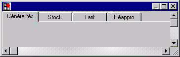

Les onglets sont utilisés sous Windows lorsqu'une même fonction affiche plusieurs masques logiquement liés. L'utilisateur peut passer d'un masque à l'autre à son gré, et ceci très simplement : il lui suffit de cliquer sur l'onglet associé à la page désirée.
L'onglet qui correspond à la page couramment affichée est présenté en avant-plan par rapport aux autres onglets.
Remarques :
Dans la suite et selon le contexte, onglet pourra désigner soit le "groupe d'onglets", soit l'UN des onglets proprement dit.
L'en-tête d'un onglet peut afficher soit un libellé, soit une icone soit les deux combinés.
Par exemple, la fiche "article" peut se décomposer ainsi :

Ce groupe d'onglets comporte quatre onglets (Généralités, Stock, Tarif, Réappro), correspondant chacun à une page de masque Xwin.